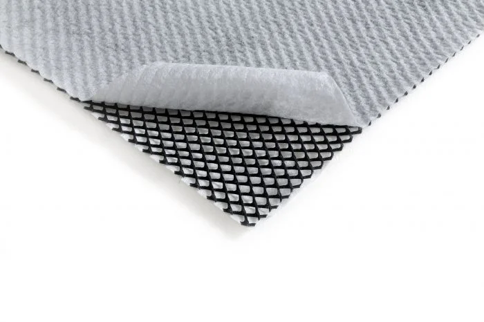
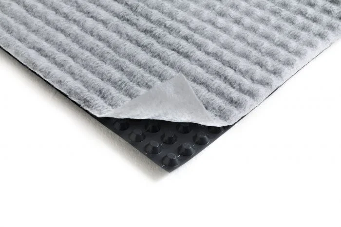
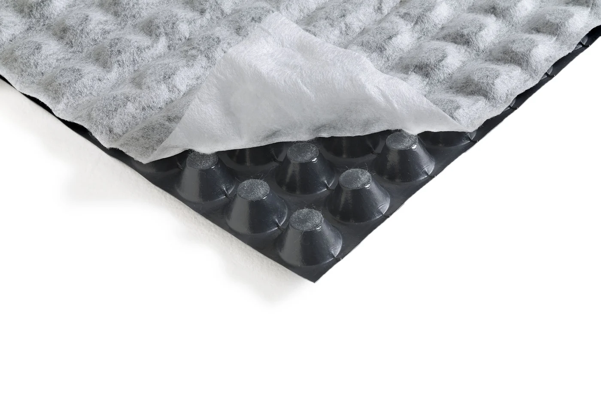
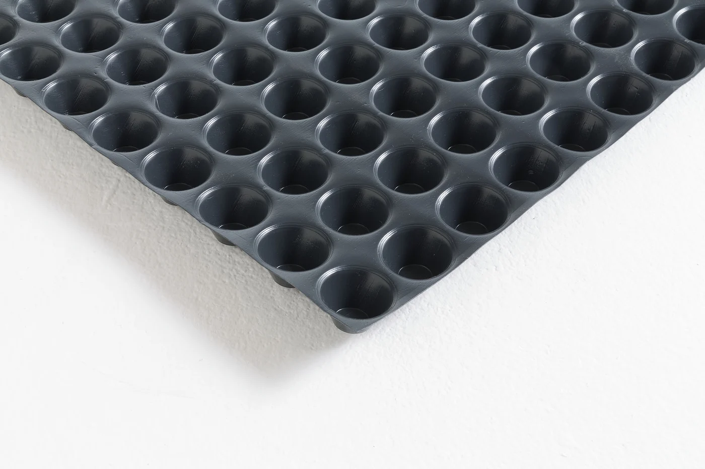
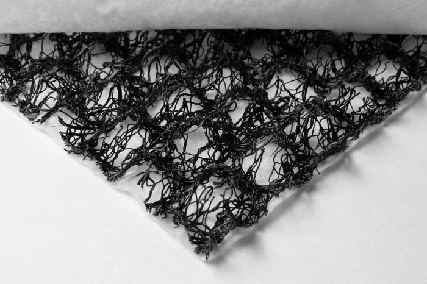
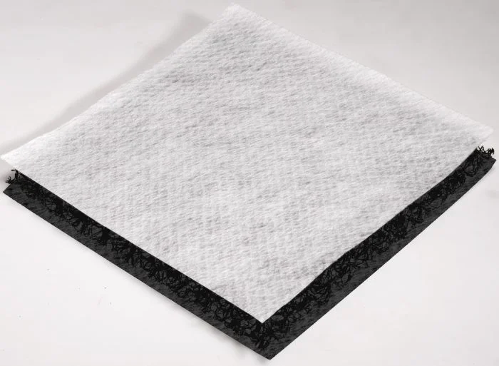
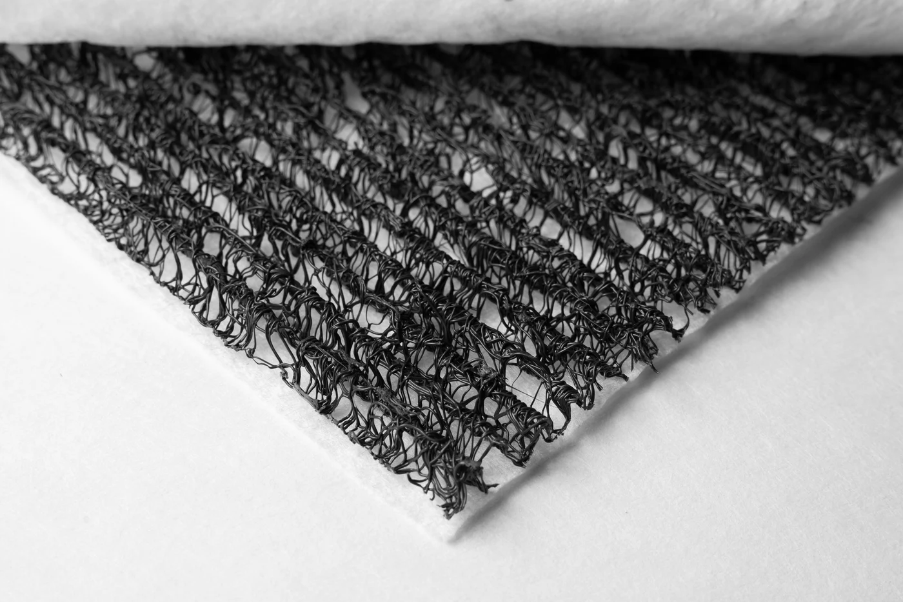
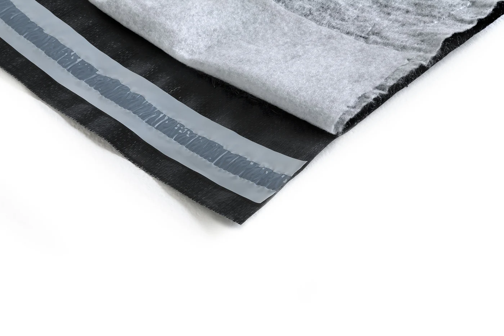
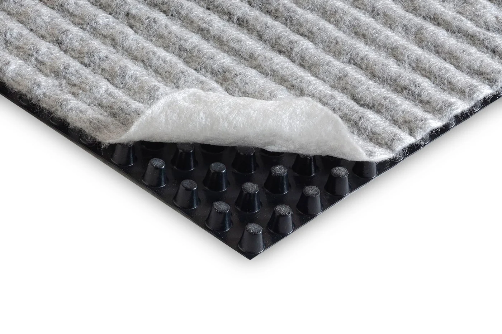

T-Drain
Georete in HDPE accoppiata a due TNT · spessori 5 e 7 mm
Geocomposito drenante costituito da una georete a due fili incrociati in HDPE, accoppiata a due geotessili non tessuti in PP. Utilizzato per il drenaggio di coperture piane carrabili e di fondazioni e opere interrate.

T-Kone G Drain
Membrana bugnata accoppiata con TNT
Geomembrana bugnata in HDPE accoppiata a un geotessuto, usata come protezione meccanica delle membrane impermeabilizzanti e per il drenaggio, con buona resistenza alla compressione. Utilizzata in coperture piane a ballast e in fondazioni e opere interrate.

T-Kone XL Drain
Membrana bugnata 20 mm con TNT
Geomembrana in HDPE da 20 mm senza fori, accoppiata a un geotessuto, per il drenaggio di fondazioni e opere interrate.

T-Kone XL
Membrana bugnata 20 mm
Geomembrana in HDPE da 20 mm usata come protezione meccanica delle membrane impermeabilizzanti e come cassero a perdere drenante, per fondazioni e opere interrate.

T-Mix Drain 20
Anima in monofilamenti bicuspidi · spessore 20 mm
Geocomposito drenante composto da un'anima di monofilamenti bicuspidi (a piramide) accoppiata a due geotessili filtranti, disponibile in pesi diversi. Utilizzato per il drenaggio di fondazioni e opere interrate.

T-Mix Drain 20 S BW
Anima in monofilamenti, tessuto differenziato · 20 mm
Geocomposito drenante con anima di monofilamenti bicuspidi e due geotessili differenziati (superiore filtrante, inferiore protettivo), pensato per l'applicazione a caldo sulla guaina impermeabilizzante. Protezione meccanica e drenaggio per fondazioni e opere interrate.

T-Mix Drain Plus
Anima in monofilamenti aggrovigliati
Geocomposito drenante con anima in monofilamenti di polipropilene aggrovigliati a canali paralleli, accoppiata a due geotessili filtranti. Buona resistenza alla compressione e capacità di drenaggio ad alti e bassi carichi, per coperture piane carrabili, verde pensile e fondazioni e opere interrate.

T-Mix Drain WP Plus
Anima in monofilamenti con lamina impermeabilizzante
Geocomposito drenante con anima in monofilamenti accoppiata a un geotessuto filtrante da un lato e a una membrana poliolefinica dall'altro, per limitare le infiltrazioni di oli e idrocarburi. Il cordolo butilico lungo la cimosa sigilla le sovrapposizioni tra i teli accostati. Utilizzato in coperture piane carrabili e in fondazioni e opere interrate.

TMD 1011
Membrana bugnata accoppiata con TNT · fino a 400 kPa
Geomembrana in HDPE accoppiata a un geotessuto, usata come protezione meccanica delle membrane impermeabilizzanti e per il drenaggio. La forma delle bugne garantisce un'ottima resistenza alla compressione, fino a 400 kPa. Utilizzata in coperture piane carrabili e in fondazioni e opere interrate.